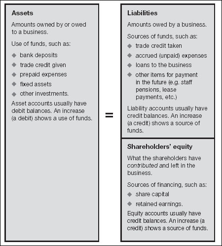
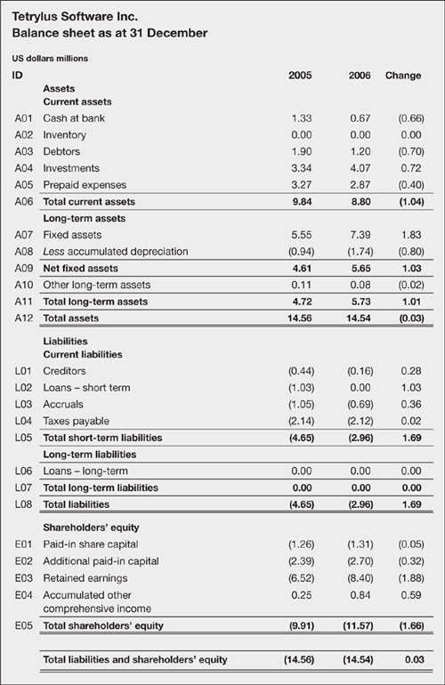
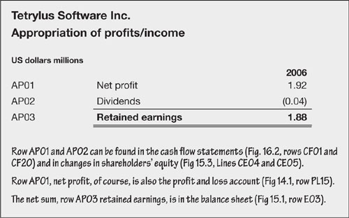
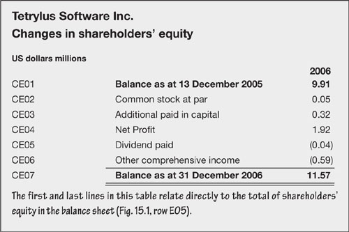
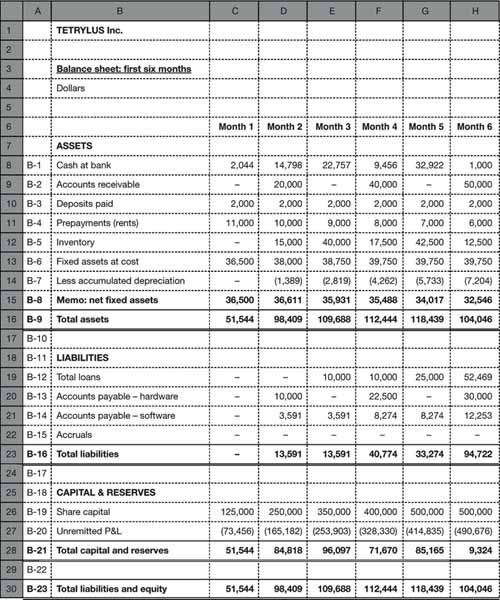

Balancing act
Balance sheets are the paper tigers of financial reporting. They are as easy to understand as the profit and loss account – perhaps easier – but they are widely feared and misunderstood. Do not worry. If you have made it this far, there is nothing to fear in this chapter. The balance sheet is a snapshot of the net wealth of an entity – showing (in summary) everything it owns and owes. This tells you a great deal about past performance and the potential for the future.
This chapter describes the balance sheet, what it is, how it is structured, what it shows, how to interpret it and how to project your own.
Flows and snapshots
You will recall from the previous chapter that a profit and loss account (P&L) shows flows over time. You can add figures from two P&Ls, each covering, say, six months, to find the totals for the year as a whole.
In contrast, a balance sheet is a snapshot on a given date – say 30 June or 31 December. It is similar to the opening or closing balance on your bank statement; a statement of position at the close of business on one day. Logically, you cannot add two balance sheets. If you subtract one from another this will reveal the changes that took place between the two dates, but these are not total flows. As with the bank statement example, you would not know how much money came into and went out of an account between the opening and closing balances, only the net change.
The balance sheet – what it is
A balance sheet is nothing more complex than a statement of position at a given date. The balance sheet lists all the money owned or owed to (assets) and owed by (liabilities and shareholders’ equity) a business. I sense you were with me until I mentioned shareholders’ equity. Basically, you always want assets to exceed liabilities. The difference belongs to the owners; it is the stake (equity) of the shareholders. As mentioned in Chapter 7, if a company were a person, shareholders’ equity would be called owners’ equity or net worth, as it is in a sole trader’s accounts. Arithmetically, shareholder’s equity always equals assets less liabilities. Or, to put it another way, assets equal liabilities plus shareholders’ equity, as shown in this little diagram:
The balance sheet – assets equal liabilities plus shareholders’ equity

Let me stress once again that while a profit and loss account shows flows over a given period (say, one year), the balance sheet is a snapshot at the close of a given day (say, 31 December). You would be right in thinking that this leaves it open to some manipulation – a roguish practice known endearingly as window dressing. For example, cash balances might have been very different the day before or the day after. Keep this in mind when you look at financial statements.
The balance sheet – what it shows
As indicated, every balance sheet has three sections – assets, liabilities and shareholders’ equity. They may be laid out differently from the examples given here. More traditional accounts show liabilities/equity and assets side by side rather than vertically. You will not find this difference intellectually taxing.
Assets and liabilities may be classified into short and long term, and the entries are generally arranged in order of life expectancy. Regulators prefer (but do not usually demand) the specific identification of short-term assets and liabilities. Most companies do show current assets and liabilities and this certainly assists with analysis – the difference between the two is defined as working capital. The definition of short term may be in the notes to the financial statements, otherwise you can take it to be a year. The structure of a typical balance sheet is shown in Fig. 15.1. As with the profit and loss account, let me run through this financial statement starting at the top. This time, it is more useful to focus on the entries rather than the totals.
Fig 15.1. In balance
‘It is one thing for a company to “cook the books” by fraudulently inflating revenue through phoney sales or inventing phantom inventory. ... But some of the recent accounting scandals have involved a different kind of activity – companies asserting aggressive interpretations of GAAP to justify financial statement treatment, such as capitalization of expenses or so called “true sales” off assets to off-blalance sheet entities to remove debt from the balance sheet.’
—Paul S. Atkins
(Commissioner, U.S. Securities and Exchange Commission, 2002)
Assets
Cash and bank deposits are the most liquid of assets – and, of course, they are used to pay the bills. As you have probably gathered, transactional bank deposits are regarded as synonymous with cash for the purposes of analysis. Time deposits are almost as good as paper money. Of course, any company should have enough liquidity to cover slumps in sales and other short-term crises.
Inventory includes raw materials, part-completed work-in-progress and finished items. The extent to which these can be turned into cash varies, as does the underlying true market value. Again, the notes to the accounts should provide more details. Look for the accounting policy (FIFO, LIFO, etc. – see Chapter 13). If inventory is growing faster than sales this might be a sign of a slowdown, and of obsolete or outdated stocks. The example has a nil entry for inventory because this software company does not record any in its accounts.
Trade debtors or accounts receivable represents money that will, or should, be collected from customers. The notes to the accounts should show long-standing debts and provisions for bad debts. If receivables are growing faster than sales, customers are getting slower in paying – a worrying trend?
|
| Personally, I prefer the Americanism accounts receivable, which seems so much more positive than debtors. I have used debtors in this example for a simple reason. You can probably remember that a debtor owes you money which is rightly yours – so, debtors are on the asset side of the balance sheet, asset accounts have debit balances and an increase in an asset is a debit. Similarly you owe money to creditors, so they show on the liabilities side, liability accounts have credit balances and an increase in liabilities is a credit. |
Prepayments are amounts paid in advance, such as rents or telecoms rentals. As you may know, they are often hard to recover. It may not be possible to turn them back into cash in a crisis, but providing the business continues to operate they are a measure of stored value.
Fixed assets were covered in detail in Chapter 11. The balance sheet will show the following:
Fixed assets at cost – the total acquisition cost.
Accumulated depreciation – the sum of all the depreciation that has been reported in the profit and loss account to date. Accumulated depreciation is a contra entry – in that it is a negative amount. The increase in accumulated depreciation (line A08) is the amount that shows as the depreciation expense in the profit and loss account (line PL05 in Fig. 14.1). Remember that we are using the term depreciation as shorthand for depreciation, amortization and depletion.
Net Fixed Assets is the book value (i.e. at balance sheet date) of fixed assets after subtracting depreciation.
Plant property and equipment are usually shown separately from intangible assets. Remember that a company may have intellectual property of significant value (brands, position, reputation, competencies) which are not reflected in the balance sheet.
Also, note that certain fixed assets (e.g. machinery) may be easier to liquidate than some short-term assets (such as prepaid rents), and fixed assets often have a market value above book value. Look in the notes to the financial statements for more detail.
|
Liabilities
Trade creditors or accounts payable reflects loans from suppliers and business partners in the normal course of business. See the note after trade debtors, above.
Short-term loans are borrowing from banks and other lenders – repayable within 12 months. In the example here, the company has repaid all its borrowing between the two balance sheet dates.
In December 2002 telecoms giant Cable & Wireless was criticized for not divulging a clause in its 1999 agreement with Deutsche Telecom, requiring that £1.5 bn of its £2.2bn net cash could be forced into an escrow account to cover tax liabilities.
Long-term loans represent more-structural borrowing – and should be matched against long-term assets (i.e. if short-term borrowing is being used to finance long-term assets there could be a funding crisis if loans are not renewed). We will return to this topic in Chapter 19.
|
Provisions. Balance sheets may include an entry in the liabilities section for some contingent liabilities – probable future costs or losses where the timing or amount is uncertain – such as might arise under a contract. In the past, these were often referred to as contingencies, but the International Accounting Standards Board has tightened up the terminology. It refers to probable obligations as provisions and uses the word contingencies for reasonably possible or remote obligations and benefits which are not reported in the balance sheet (discussed below, see Off balance sheet but not forgotten).
Provisions should be charged to income (i.e. the profit and loss account) and accrued in the balance sheet if:
there is an obligation arising from past events;
it is probable that it will cause an outflow of resources; and
the amount can be estimated reliably.
Shareholders’ equity
Paid-in share capital is the book value of money raised by an equity issue. For example, if one million ordinary $1 shares were sold for $1.50 each, paid-in capital would increase by $1 million. The $0.5 million excess over book value would be listed as additional paid-in capital. This classification reflects regulations in some jurisdictions that companies must maintain a minimum level of capital (i.e. the book value or par value of paid-in capital) which cannot be distributed to shareholders. There may be more than one class of share capital (e.g. ordinary and preference shares). See Chapter 19 for more details.
Additional paid-in share capital. See paid-in share capital.
Treasury stock. The example does not show treasury stock, but you will sometimes see a reduction in contributed capital (i.e. paid-in capital) under the heading treasury stock. This reflects the company’s holding of its own stock repurchased in the open market (see Chapter 19). Treasury stock is a contra account because it will have a debit balance partially offsetting the normal credit balances on this part of the balance sheet.
Retained earnings is the name of a cumulative reserve built up by not distributing profits as dividends. Note that this is a bookkeeping reserve and the balance says nothing about cash reserves. Figure 15.2 shows the relationship between net profit and retained earnings.
Fig 15.2. What they do with the profit

Other comprehensive income. You will recall that the penultimate line in the profit and loss account in Fig. 14.1 was a bookkeeping entry to cover unrealized gains and losses as at the balance sheet date. This amount is set against shareholders’ equity as other comprehensive income.
Statement of changes in shareholders’ equity
If you have access to a full set of financials, there is nothing new in the statement of changes in shareholders’ equity. However, in published accounts, it can reveal numbers which – traditionally at least – are not reported elsewhere.
Figure 15.3 shows a simplified presentation. If you can follow the logic, there is not much else to say. The changes represent:
Change in contributed capital – financing raised through share issues less funds disbursed repurchasing treasury stock.
Retained earning – which can be negative when there are losses.
Dividends paid out.
Other unrealized gains and losses (other comprehensive income).
Fig 15.3. How a company’s wealth grows

All of these have been discussed already.
Off balance sheet but not forgotten
There are a number of items which do not appear in a balance sheet, but which nevertheless should be reported in the footnotes. These are often very revealing. The following items are not required in all jurisdictions, but they are mandatory under international accounting standards.
Contingencies. As mentioned above under provisions, probable future obligations should be included in the balance sheet, while reasonably possible or remote events should be disclosed in the notes. International accounting standards require disclosure as follows:
contingent liabilities should be disclosed unless the possibility of an outflow of resources embodying economic benefits is remote.
contingent assets should be disclosed if an inflow of economic benefits is probable.
Examples include bad debts, obligations related to product warranties and defects, obligations to repurchase assets that have been sold, guarantees for the debts of other enterprises, threatened litigation, claims, and so on.
Contracts and negotiations. Look in the footnotes for details of contracts and negotiations which might involve future obligations. Examples include leases, staff pension plans, and share option schemes.
Related parties. When a third party has control or significant influence over the financial or operating decisions of the company, the relationship should be noted – even if no transactions have taken place. Such relationships include parent companies, principal owners and significant investors (and their close family), entities under common control, and key management personnel.
Events after the balance sheet date. Significant events which occur between the date of the financial statements and their publication should be reported in the notes. Such subsequent events include bankruptcies of trading partners, catastrophes such as fire or flood, the results of litigation, and gains or losses on marketable securities.
Other. A UK requirement, taken into International Accounting Standard No. 1, is that details of the company’s place of incorporation, registered office, principal activities, immediate and ultimate parent company and number of employees should be stated.
The balance sheet – what it means
Contemporary reporting and disclosure standards make current balance sheets more valuable than they were a few decades back. Remember to read the notes to the financial statements. Then read between the lines.
The previous few pages should have highlighted why each category of assets, liabilities and equity is important. However, there are other keys to unlocking the value of the balance sheet. One is the cash flow statement, considered in the next chapter. Other hints are included in the analysis and review of financials (Chapters 17 and 18). And the section on funding (Chapter 19) will help you to interpret loans and shareholders’ equity.
The balance sheet – looking ahead
Projecting a balance sheet is a logical progression from the forecasting and estimating that you have done so far. There is an example in Fig. 15.4 (see p. 234), which was derived as follows. First, remember that any total in the profit and loss account is a change in the balance sheet. Then work through the items in the balance sheet, but not necessarily in top-to-bottom order for reasons that the following notes will make clear:
The fixed assets and inventory entries in the balance sheet are taken from analysis conducted in Chapters 11 and 13. For example, spending of $1,500 on fixed assets was projected for month two, so the balance sheet total at the end of month two is $1,500 higher than the total at the end of month one.
Similarly, the entry for retained earnings changes by the amount of net profit in any one period.
Prepayments and accruals change by the amounts recorded as, well, prepayments and accruals adjustments. You will have derived these figures when passing bookkeeping entries to shift transactions from the date that cash changes hands to the relevant accounting periods (e.g. to record July’s rent against July, and not against the month when you paid it – see accruals accounting in Chapter 8).
Deposits paid and taken change by the amounts disbursed and received in each period.
Accounts payable might be calculated in a similar manner to note 3 (which is the case in the example here). However, it is usually easier to project these as ratios. For example, if you receive the same average value of deliveries each week, if your suppliers give you 30 days’ credit, and if you make one payment a month, payables will average one-half of one month’s spending on supplies. On this basis, if your expenditure on materials, components, etc. is $10,000 in January, payables at end of that month will be $5,000. Note that this is not a change, it is the actual figure which shows in the balance sheet at end-month.
Accounts receivable can be calculated using either of the two methods just described for payables. However, do not forget to make an allowance for bad debts (Chapter 8).
Other assets and liabilities (except cash, loans and share capital) are calculated on a similar basis to notes 4 and 5 above.
Cash, loans and share capital depend on your cash flow and financing policies. We will discuss these in more depth in Chapter 19. For the moment, pretend that share capital is fixed. One approach is to assume that cash balances remain at a level just sufficient to cover daily net cash requirements (perhaps some percentage of operating profit with depreciation added back in – because depreciation in the accounts does not involve spending real money), and loans increase or decrease by net cash flow over the period. Alternatively, you could assume that loans are fixed and let the cash balance change accordingly. You actually need more information – we will return to this after projecting cash flow (next chapter) and financing and investing (Chapter 19).
Fig 15.4. Sample balance sheet

|
‘Like all human endeavours, accounting has its own internal politics and fads. A current fad is to run more and more transactions through the income statement, and to put on the balance sheet more and more human judgments, particularly about future values.’
—Alfred R. Berkeley, III
(Vice-Chairman, The Nasdaq Stock Market, January 2003)